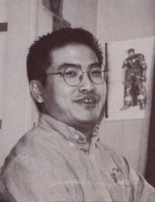

Kentaro Miura foi um renomado mangaká japonês, mais conhecido por criar a aclamada série de mangá "Berserk". Nascido em 11 de julho de 1966 em Chiba, Japão, Miura demonstrou um talento precoce para o desenho e a narrativa, que eventualmente o levaria a se tornar uma figura icônica no mundo dos mangás. Início da Carreira Miura começou a se interessar por desenho ainda na escola primária, criando seu primeiro mangá, "Miuranger", em 1976, com apenas 10 anos de idade. Este projeto inicial, desenhado para seus colegas de escola, consistiu em 40 volumes, uma impressionante façanha para alguém tão jovem. Ao longo dos anos escolares, ele continuou a aperfeiçoar suas habilidades e a experimentar diferentes estilos e técnicas. Durante o ensino médio, Miura produziu obras como "Ken e no Michi" e "Futatabi...", que foram publicadas em revistas escolares. Essas obras já demonstravam seu talento nato para a narrativa gráfica e seu estilo artístico detalhado. Formação e Primeiros Trabalhos Em 1985, Miura entrou na Universidade de Artes de Nihon, onde continuou a desenvolver suas habilidades artísticas. Durante esse período, ele criou "Noa", um mangá que foi publicado na revista "Weekly Shōnen Magazine". Embora "Noa" não tenha tido grande sucesso, foi uma experiência importante para Miura e ajudou a estabelecer seu nome na indústria. Em 1988, ele trabalhou como assistente de George Morikawa, o criador de "Hajime no Ippo". No entanto, seu talento era tão evidente que ele logo foi liberado para se concentrar em seus próprios projetos.  Criação de Berserk Em 1988, Miura começou a trabalhar na obra que se tornaria sua magnum opus, "Berserk". O primeiro capítulo foi publicado na revista "Monthly Animal House" (posteriormente renomeada para "Young Animal") em 1989. "Berserk" é uma série de fantasia sombria que segue a jornada de Guts, um guerreiro solitário que luta contra forças demoníacas em um mundo medieval brutal e implacável. "Berserk" rapidamente se destacou pela sua narrativa complexa, personagens profundos e moralmente ambíguos, e um estilo artístico incrivelmente detalhado e sombrio. A série ganhou um grande número de fãs ao redor do mundo e se tornou um marco no gênero de fantasia sombria, influenciando muitos outros trabalhos no campo dos mangás, animes, jogos e além.
Sucesso e Legado O trabalho de Miura em "Berserk" não só definiu sua carreira, mas também teve um impacto significativo na cultura popular. A série foi adaptada para várias mídias, incluindo animes, filmes e jogos de vídeo. Seu estilo artístico detalhado e suas temáticas maduras estabeleceram novos padrões no gênero e inspiraram inúmeros artistas e escritores. Miura era conhecido por sua meticulosidade e dedicação ao trabalho, o que, infelizmente, também levou a frequentes hiatos na publicação de "Berserk". Cada novo capítulo, no entanto, era aguardado com grande expectativa pelos fãs, que valorizavam a profundidade e a qualidade de sua narrativa. Últimos Anos e Morte Em 6 de maio de 2021, Kentaro Miura faleceu aos 54 anos devido a uma dissecção aguda da aorta. Sua morte foi um choque para a comunidade de fãs e para a indústria dos mangás. Miura deixou um legado duradouro, e "Berserk" continua sendo uma das obras mais influentes e respeitadas do gênero. Após sua morte, a editora Hakusensha e os colegas de Miura na editora "Young Animal" expressaram seu desejo de honrar a memória do autor e de concluir "Berserk" com base em suas notas e esboços, uma tarefa que ainda está sendo discutida e planejada
.Nome: Kentaro Miura
Data de Nascimento: 11 de julho de 1966
Data de Falecimento: 6 de maio de 2021
Obras Notáveis: Berserk
Profissão: Mangaká